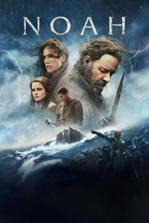

#808 Noah
 gesehen am 07.12.2015
gesehen am 07.12.2015
 
 IMDB-Wertung: 5.8 / 10
IMDB-Wertung: 5.8 / 10  Metascore: 68
Metascore: 68 
Eine gigantische Sintflut droht, alles Leben auf der Erde auszulöschen, denn Gott ist zornig! Doch er beauftragt Noah damit, eine Arche zu bauen. Auf ihr soll er das Überleben von Menschheit und Tierwelt sichern, indem er jede Spezies mit jeweils einem Männchen und einem Weibchen an Bord bringt. Während Noah mit seiner Frau Naameh, seinen Söhnen Ham und Shem sowie deren Freundin Ila an die Arbeit geht, droht Gefahr durch andere Menschen. Die wollen sie sich ihren Platz auf dem rettenden Schiff sichern, als sie von Noahs Plan erfahren. Und sie sind bereit, dafür zu töten. Deswegen setzt Noah alles daran, seinen Auftrag zu Ende zu bringen. Dazu braucht es Hoffnung – die schwindet jedoch mit steigendem Wasserpegel…
Jahr: 2014
Dauer: 138 Minuten
FSK: 12
Land: USA Studio: Paramount PicturesTonspuren: DD5.1 - ,
Untertitel: Deutsch,
Auflösung: 1080p (1920x1040) Größe: 11878 MB
Genre: Action, Abenteuer, Drama
Regisseur: Darren Aronofsky
Drehbuch: Darren Aronofsky, Ari Handel
Soundtrack: Clint Mansell
Darsteller:
 Russell Crowe als Noah
Russell Crowe als Noah Jennifer Connelly als Naameh
Jennifer Connelly als Naameh Ray Winstone als Tubal-cain
Ray Winstone als Tubal-cain Anthony Hopkins als Methuselah
Anthony Hopkins als Methuselah Emma Watson als Ila
Emma Watson als Ila Logan Lerman als Ham
Logan Lerman als Ham Douglas Booth als Shem
Douglas Booth als Shem Nick Nolte als Samyaza
Nick Nolte als Samyaza Mark Margolis als Magog
Mark Margolis als Magog Kevin Durand als Rameel
Kevin Durand als Rameel Marton Csokas als Lamech
Marton Csokas als Lamech Finn Wittrock als Young Tubal-cain
Finn Wittrock als Young Tubal-cain Madison Davenport als Na'el
Madison Davenport als Na'el- Gavin Casalegno als Young Shem
- Nolan Gross als Young Ham
- Skylar Burke als Young Ila
 Dakota Goyo als Young Noah
Dakota Goyo als Young Noah- Ariane Rinehart als Eve
- Adam Griffith als Adam
- Sophie Nyweide als Younger Sister
 Don Harvey als Mean Uncle
Don Harvey als Mean Uncle Sami Gayle als Refugee Daughter
Sami Gayle als Refugee Daughter- Barry Sloane als Poacher Leader
- Arnoddur Magnus Danks als Laughing Poacher
 Gregg Bello als Testu-col
Gregg Bello als Testu-col Frank Langella als Og
Frank Langella als Og- Joe Barlam als Soldier , uncredited
- Ezra Barnes als Father , uncredited
 Anne Bergstedt als Wife Maiden , uncredited
Anne Bergstedt als Wife Maiden , uncredited- Josh Bodenhamer als Refugee , uncredited
 Maria Breyman als Outcast , uncredited
Maria Breyman als Outcast , uncredited Kevin Cannon als The Butcher , uncredited
Kevin Cannon als The Butcher , uncredited- Lucas McHugh Carroll als Refugee , uncredited
- Kylie Cast als Young Maiden , uncredited
- Adam Celentano als Refugee , uncredited
- Clem Cote als Tubal Cain Soldier , uncredited
- Ludovic Coutaud als Refugee , uncredited
- Ryan Ebling als Soldier , uncredited
- Jeff El Eini als Soldier , uncredited
 Jim Ford als Refugee , uncredited
Jim Ford als Refugee , uncredited- Sam Ibram als Wedge Soldier , uncredited
- Jeff Jackter als Soldier , uncredited
 Jóhannes Haukur Jóhannesson als Cain , uncredited
Jóhannes Haukur Jóhannesson als Cain , uncredited- Chris Kapcia als Refugee , uncredited
- Shana Kaplan als Refugee , uncredited
- Samuel F. Klein als Flood Victim , uncredited
- Max Kolby als Refugee , uncredited
- Kirk Larsen als Warlord , uncredited
- Billy Lee als Refugee , uncredited
- David Madison als Soldier , uncredited
Datei: X:\2014(N-Z)\Noah (2014, FSK12, 1920x1040).mkv seit 26.03.2015
Festplatte: HD 2013(I-Z)-2014(A-Z)
 Es gibt insgesamt 163 Filme in der Gruppe '2014(N-Z)'
Es gibt insgesamt 163 Filme in der Gruppe '2014(N-Z)'